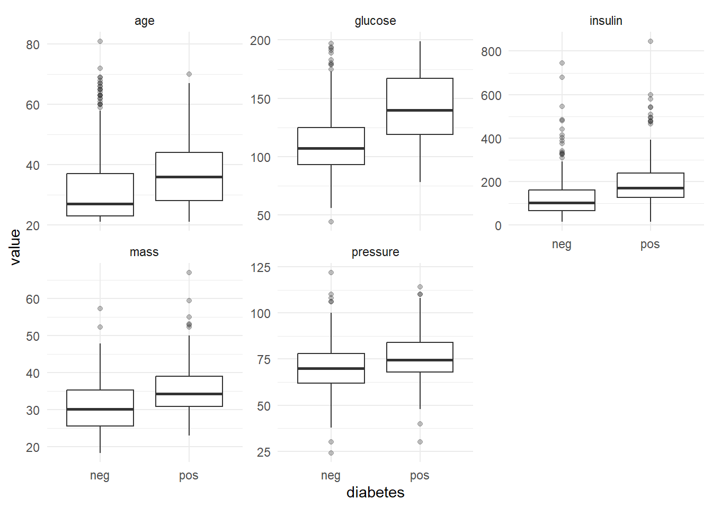
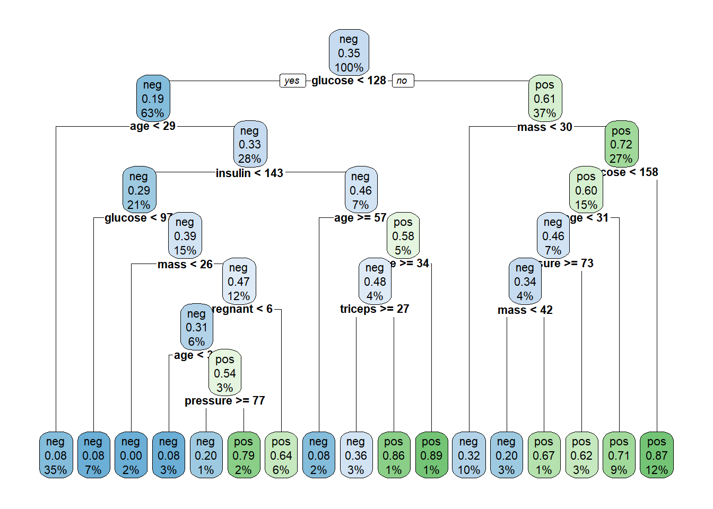
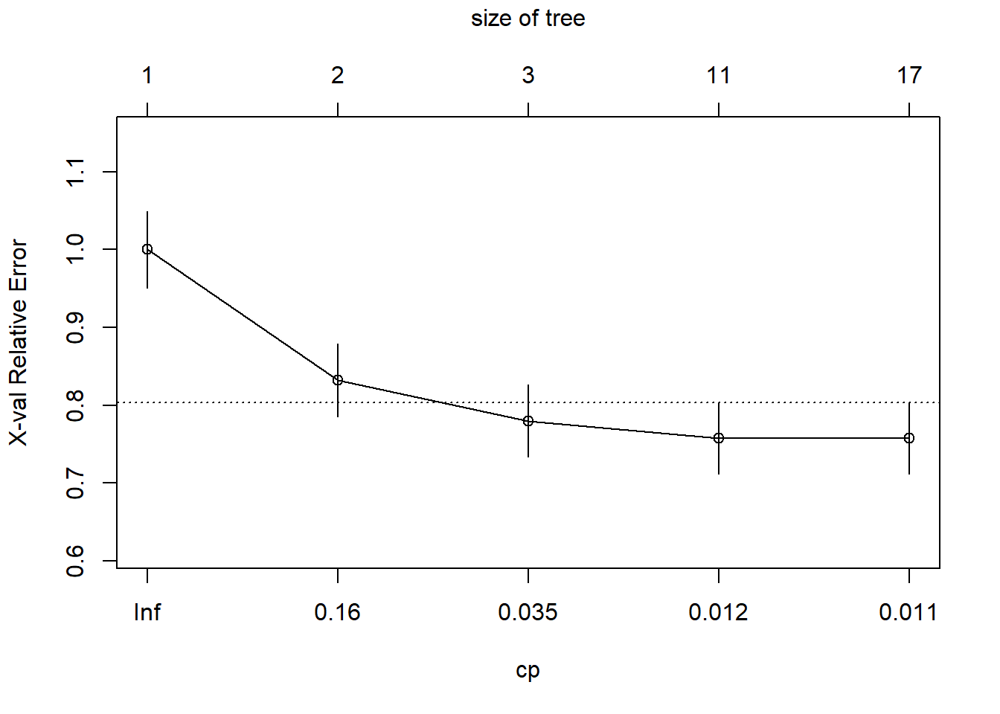
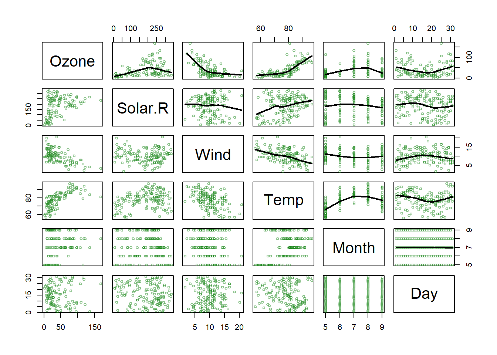

Cargando paquete requerido: mlbenchWarning: package 'mlbench' was built under R version 4.4.3Cargando paquete requerido: mlbenchWarning: package 'mlbench' was built under R version 4.4.3A bank needs to have a way to decide if/when a customer can be granted a loan.
A doctor may need to decide if a patient has to undergo a surgery or a less aggressive treatment.
A company may need to decide about investing in new technologies or stay with the traditional ones.
In all those cases a decision tree may provide:
Decisions are often based on asking a sequence of yes/no questions -from more general to more specific- based on available information, whose answers induce binary splits on data that end up with some grouping or classification.
This process can be more generically stated in the context of supervised learning.
Let \((X, Y)\) be a r.v. with support \(\mathcal{X} \times \mathcal{Y} \subseteq \mathbb{R}^{p} \times \mathbb{R}\).
General supervised learning or prediction problem:
Training sample: \(S=\left\{\left(\boldsymbol{x}_{1}, y_{1}\right), \ldots,\left(\boldsymbol{x}_{n}, y_{n}\right)\right\}\), i.i.d. from \((\boldsymbol{X}, Y)\).
The goal is to define a function (possibly depending on the sample) \(h_{S}: \mathcal{X} \mapsto \mathcal{Y}\) such that for a new independent observation \((\boldsymbol{x}_{n+1}, y_{n+1})\) , from which we only know \(\boldsymbol{x}_{n+1}\), it happens that: \[ \hat{y}_{n+1}=h_{S}\left(x_{n+1}\right) \text { is close to } y_{n+1} \text { (in some sense). } \]
Function \(h_{S}\) is generically called a prediction function, or depending on the case, classification or regression function.
The prediction function \(h_{S}\) is said to describe a classification or a regression problem depending on the case.
If \(\mathcal{Y} \subseteq \mathbb{R}\) (or \(\mathcal{Y}\) an interval) we have a standard regression problem.
If \(\mathcal{Y}=\{0,1\}\) (or, also, \(\mathcal{Y}=\{-1,1\}\) ) we have a problem of binary classification or discrimination.
If \(\mathcal{Y}=\{1, \ldots, K\}\) (or \(\left.\mathcal{Y}=\left\{\boldsymbol{y} \in\{0,1\}^{K}: \sum_{k=1}^{K} y_{k}=1\right\}\right)\) we face a of \(K\) classes classification problem.
Probabilistic model for supervised learning
Response variable \(Y\).
Explanatory variables (features) \(\boldsymbol{X}=\left(X_{1}, \ldots, X_{p}\right)\).
Data \(\left(\boldsymbol{x}_{i}=\left(x_{i 1}, \ldots, x_{i p}\right), y_{i}\right), i=1, \ldots, n\) i.i.d. from the random variable \[ \left(\boldsymbol{X}=\left(X_{1}, \ldots, X_{p}\right), Y\right) \sim \operatorname{Pr}(\boldsymbol{X}, Y) \]
\(\operatorname{Pr}(\boldsymbol{X}, \boldsymbol{Y})\) denotes the joint distribution of \(\boldsymbol{X}\) and \(Y\).
Given the probabilistic model it can be re-stated as learning the conditional distribution \(\operatorname{Pr}(Y \mid \boldsymbol{X})\).
In practice we focus on learning a conditional location parameter: \[ \mu(\boldsymbol{x})=\underset{\mu}{\operatorname{argmin}} \mathbb{E}(L(Y, \mu) \mid \boldsymbol{X}=\boldsymbol{x}), \] where \(L(y, \hat{y})\), loss function, measures the error of predicting \(y\) with \(\hat{y}\).
For quadratic loss, \(L(y, \hat{y})=(y-\hat{y})^{2}, \mu(x)\) is the regression function: \[ \mu(\boldsymbol{x})=\mathbb{E}(Y \mid \boldsymbol{X}=\boldsymbol{x}) \]
A decision tree is a graphical representation of a series of decisions and their potential outcomes.
It is obtained by recursively stratifying or segmenting the feature space into a number of simple regions.
Each region (decision) corresponds to a node in the tree, and each potential outcome to a branch.
The tree structure can be used to guide decision-making based on data.
Decision trees are simple yet reliable predictors that can be use for both classification or prediction
Classification Trees are classifiers, used when the response variable is categorical
Regression Trees, are regression models used to predict the values of a numerical response variable.
A node is denoted by \(t\).
The left and right child nodes are denoted by \(t_{L}\) and \(t_{R}\)
The collection of all nodes in the tree is denoted \(T\)
The collection of all the leaf nodes is denoted \(\tilde{T}\)
A split will be denoted by \(s\).
The set of all splits is denoted by \(S\).
| Package | Language | Role | Notes |
|---|---|---|---|
rpart |
R | CART implementation | Standard tree fitting |
tree |
R | CART (simplified) | Mainly for teaching |
caret |
R | Modeling framework | Unified interface |
scikit-learn |
Python | CART-like trees | Standard in Python ecosystem |
As with any model, we aim not only at construting trees.
We wish to build good trees and, if possible, optimal trees in some sense we decide.
In order to build good trees we must decide
How to construct a tree?
How to optimize the tree?
How to evaluate it?
A binary decision tree is built by defining a series of (recursive) splits on the feature space.
The splits are decided in such a way that the associated learning task is attained
The ultimate goal of the tree is to be able to use a combination of the splits to accomplish the learning task with as small an error as possible.
A tree represents a recursive splitting of the space.
In the end, every leaf node is assigned with a class (or value) and a test point is assigned with the class (or value) of the leaf node it lands in.
Some ways perform better than other for a given task, but rarely will they be perfect.
So we aim at combining splits to find a better rule.
Tree building involves the following three elements:
How to assign each terminal node to a class
How to ensure the tree is the best possible we can build.
The most popular algorithm for buildiong trees is CART which can be schemeatically described as follows:
Initialize: all data in root node
Repeat for each node, until stopping criterion is met
2.1 Generate candidate splits
2.2 Select best split (maximize impurity reduction)
2.3 Split node into two children
CART is a greedy recursive partitioning algorithm.
To build a Tree, questions have to be generated that induce splits based on the value of a single variable.
Ordered variable \(X_j\):
Categorical variables, \(X_j \in \{1, 2, \ldots, M\}\):
The pool of candidate splits for all \(p\) variables is formed by combining all the generated questions.
With the pool of candidate splits, next step is to decide which one to use when constructing the decision tree.
Intuitively, when we split the points we want the region corresponding to each leaf node to be “pure”.
That is, we aim at regions where most points belong to the same class.
With this goal in mind we select splits by measuring their “goodness of split” using some of the available Impurity fuctions introduced later.
In order to measure homogeneity,or as called here, purity, of splits we rely on different Impurity functions
These functions allow us to quantify the extent of homogeneity for a region containing data points from possibly different classes.
A region will be more pure or more homogeneous the less variable is the set of points it contains.
In the next image regions on the right of the image are homogeneous that is purer than the heterogeneous regions on the left.
An impurity function is a function \(\Phi\) defined on the set of all \(K\)-tuples of numbers \(\mathbf{p}= \left(p_{1}, \cdots, p_{K}\right)\) s.t. \(p_{j} \geq 0, \, \sum_{j=1}^K p_{j}=1\), \[ \Phi: \left(p_{1}, \cdots, p_{K}\right) \rightarrow [0,1] \]
with the properties:
The functions below are commonly used to measure impurity.
Entropy: \(\Phi_E (\mathbf{p}) = -\sum_{j=1}^K p_j\log (p_j)\) .
Gini Index: \(\Phi_G (\mathbf{p}) = 1-\sum_{j=1}^K p_j^2\).
Misclassification rate: \(\Phi_M (\mathbf{p}) = \sum_{i=1}^K p_j(1-p_j)\).
\[ i(t)=\phi\left (p(1 \mid t), p(2 \mid t), \ldots, p(K \mid t)\right) \]
\[ \Phi(s, t)=\Delta i(s, t)=i(t)-p_{R} i\left(t_{R}\right)-p_{L} i\left(t_{L}\right) \]
The best split for the single variable \(X_{j}\) is the one that has the largest value of \(\Phi(s, t)\) over all \(s \in \mathcal{S}_{j}\), the set of possible distinct splits for \(X_{j}\).
We choose the split that maximizes impurity reduction, by using a greedy strategy: the best split is chosen locally at each step.
\[ \Phi_E (\mathbf{p}) = H(\mathbf{t})=-\sum_{i=1}^{n} \underbrace{P\left(t_{i}\right)}_{p_i} \log _{2} P\left(t_{i}\right) \]
From here, an information gain (that is impurity decrease) measure can be introduced by comparing:
the entropy of the parent node before the split to
that of a weighted sum of the child nodes after the split where, - weights are proportional to the number of observations in each node.
\[ \begin{aligned} & IG(t, s)=\text { (original entr.) }-(\text { entr. after split) } \\ & IG(t, s)=H(t)-\sum_{i=1}^{n} \frac{\left|t_{i}\right|}{t} H\left(x_{i}\right) \end{aligned} \]
Consider the problem of designing an algorithm to automatically differentiate between apples and pears (class labels) given only their width and height measurements (features).
| Width | Height | Fruit |
|---|---|---|
| 7.1 | 7.3 | Apple |
| 7.9 | 7.5 | Apple |
| 7.4 | 7.0 | Apple |
| 8.2 | 7.3 | Apple |
| 7.6 | 6.9 | Apple |
| 7.8 | 8.0 | Apple |
| 7.0 | 7.5 | Pear |
| 7.1 | 7.9 | Pear |
| 6.8 | 8.0 | Pear |
| 6.6 | 7.7 | Pear |
| 7.3 | 8.2 | Pear |
| 7.2 | 7.9 | Pear |
As trees grow deeper:
However, small regions may contain few observations causing predictions to become unstable and sensitive to noise
This results in_
Altogether yields an idea: It is probably better to not let the tree grow as much as it can but control its size.
Maximizing information gain is one possible criteria to choose among splits.
In order to avoid excessive complexity it is usually decided to stop splitting when information gain does not compensate for increase in complexity.
Decision trees are built by iteratively partitioning data into smaller regions based on feature values.
Splits are aimed at producing purer nodes, that contains mostly data from one class.
Homogeneity is measured by impurity functions such as Entropy, Gini Index or Misclassification rate
The best split is chosen from candidate splits as the one that maximizes impurity reduction for example through Information Gain
Tree growth continues until impurity reduction is minimal, or a predefined depth or node size threshold is reached.
Rows: 768
Columns: 9
$ pregnant <dbl> 6, 1, 8, 1, 0, 5, 3, 10, 2, 8, 4, 10, 10, 1, 5, 7, 0, 7, 1, 1…
$ glucose <dbl> 148, 85, 183, 89, 137, 116, 78, 115, 197, 125, 110, 168, 139,…
$ pressure <dbl> 72, 66, 64, 66, 40, 74, 50, NA, 70, 96, 92, 74, 80, 60, 72, N…
$ triceps <dbl> 35, 29, NA, 23, 35, NA, 32, NA, 45, NA, NA, NA, NA, 23, 19, N…
$ insulin <dbl> NA, NA, NA, 94, 168, NA, 88, NA, 543, NA, NA, NA, NA, 846, 17…
$ mass <dbl> 33.6, 26.6, 23.3, 28.1, 43.1, 25.6, 31.0, 35.3, 30.5, NA, 37.…
$ pedigree <dbl> 0.627, 0.351, 0.672, 0.167, 2.288, 0.201, 0.248, 0.134, 0.158…
$ age <dbl> 50, 31, 32, 21, 33, 30, 26, 29, 53, 54, 30, 34, 57, 59, 51, 3…
$ diabetes <fct> pos, neg, pos, neg, pos, neg, pos, neg, pos, pos, neg, pos, n…Diabetes is a metabolic disorder related to:
Some variables are known to be associated with diabetes risk:
These variables provide indirect evidence of metabolic health
Glucose: High values indicate impaired blood sugar control
Insulin: Abnormal levels may reflect sugar is not being controlled (Insuline Resistance).
BMI (mass): Obesity is a major risk factor for diabetes
Age: Risk increases with cumulative metabolic stress
Blood pressure: Often associated with metabolic syndrome
The model combines these signals to predict diabetes risk
Warning: package 'ggplot2' was built under R version 4.4.3Warning: package 'tibble' was built under R version 4.4.3Warning: package 'tidyr' was built under R version 4.4.3Warning: package 'readr' was built under R version 4.4.3Warning: package 'purrr' was built under R version 4.4.3Warning: package 'stringr' was built under R version 4.4.3Warning: package 'forcats' was built under R version 4.4.3Warning: package 'lubridate' was built under R version 4.4.3── Attaching core tidyverse packages ──────────────────────── tidyverse 2.0.0 ──
✔ dplyr 1.1.4 ✔ readr 2.2.0
✔ forcats 1.0.1 ✔ stringr 1.6.0
✔ ggplot2 4.0.2 ✔ tibble 3.3.0
✔ lubridate 1.9.5 ✔ tidyr 1.3.2
✔ purrr 1.2.2
── Conflicts ────────────────────────────────────────── tidyverse_conflicts() ──
✖ dplyr::filter() masks stats::filter()
✖ dplyr::lag() masks stats::lag()
ℹ Use the conflicted package (<http://conflicted.r-lib.org/>) to force all conflicts to become errorslibrary(mlbench)
data(PimaIndiansDiabetes2)
vars <- c("glucose", "insulin", "mass", "pressure", "age")
PimaIndiansDiabetes2 %>%
select(all_of(vars), diabetes) %>%
pivot_longer(-diabetes, names_to = "variable", values_to = "value") %>%
ggplot(aes(x = diabetes, y = value)) +
geom_boxplot(outlier.alpha = 0.3) +
facet_wrap(~variable, scales = "free_y") +
theme_minimal()Warning: Removed 425 rows containing non-finite outside the scale range
(`stat_boxplot()`).
We wish to predict the probability of individuals in being diabete-positive or negative.
Cargando paquete requerido: rpart.plotWarning: package 'rpart.plot' was built under R version 4.4.3
rpart.plot package.Each node shows: (1) the predicted class (‘neg’ or ‘pos’), (2) the predicted probability, (3) the percentage of observations in the node.
A decision tree classifies new data points as follows.
We let a data point pass down the tree and see which leaf node it lands in.
Each leaf node defines a region where all observations share the same class.
The class of the leaf node is assigned to the new data point: all the points that land in the same leaf node will be given the same class.
Trees produce piecewise constant predictions.
A class assignment rule assigns a class \(j=1, \cdots, K\) to every terminal (leaf) node \(t \in \tilde{T}\).
The class assigned to node \(t\) is denoted by \(\kappa(t)\),
Within each node, we estimate class probabilities from the data.
If we use 0-1 loss, the class assignment rule picks the class with maximum posterior probability: \[ \kappa(t)=\arg \max _{j} p(j \mid t) \]
This rule corresponds to minimizing the 0–1 loss within each node.
Let’s assume we have built a tree and have the classes assigned for the leaf nodes.
Goal: estimate the classification error rate for this tree.
We use the resubstitution estimate \(r(t)\) for the probability of misclassification, given that a case falls into node \(t\). This is:
\[ r(t)=1-\max _{j} p(j \mid t)=1-p(\kappa(t) \mid t) \]
Denote \(R(t)=r(t) p(t)\), that is the miscclassification error rate weighted by the probability of the node.
The resubstitution estimation for the overall misclassification rate \(R(T)\) of the tree classifier \(T\) is: \[ R(T)=\sum_{t \in \tilde{T}} R(t) \]
Notice that this estimate is based on training data and may underestimate the true error!
Consider individuals 521 and 562
pregnant glucose pressure triceps insulin mass pedigree age diabetes
521 2 68 70 32 66 25.0 0.187 25 neg
562 0 198 66 32 274 41.3 0.502 28 posIf we follow individuals 521 and 562 along the tree, we reach the same prediction.
The tree provides not only a classification but also an explanation.
The question becomes harder when we go back and ask if we obtained the best possible tree.
In order to answer this question we must study tree construction in more detail.
Trees obtained by looking for optimal splits tend to overfit:
Assuming we wish to control tree growth there are distinct possible approaches:
Stopping early may prevent overfitting, but can miss important structure.
In order to reduce complexity and overfitting, while keeping the tree as good as possible, tree pruning may be applied.
Pruning works removing branches that are unlikely to improve the accuracy of the model on new data.
CART follows the second approach
CART uses the followin strategy to build optimal trees
This is known as Post-pruning approach.
There are different pruning methods, but the most common one is to use the cost-complexity pruning algorithm, also known as the weakest link pruning.
The algorithm works by adding a penalty term to the misclassification rate of the terminal nodes:
\[ R_\alpha(T) =R(T)+\alpha|T| \]
First, grow a large tree that overfits the data
Then, generate a sequence of subtrees by pruning: for increasing values of \(\alpha\), smaller trees are obtained
Each subtree balances:
Finally, use cross-validation to select the optimal \(\alpha\)
\(\rightarrow\) This determines the final tree size
Each sub-tree can by evaluated with cross-validation as follows:
Select the value of \(\alpha\) with lowest validation error.
CP nsplit rel error xerror xstd
1 0.242537 0 1.000000 1.000000 0.049288
2 0.100746 1 0.757463 0.832090 0.046939
3 0.011816 2 0.656716 0.779851 0.046022
4 0.011194 10 0.555970 0.757463 0.045599
5 0.010000 16 0.488806 0.757463 0.045599
When the response variable is numeric, decision trees are regression trees.
Option of choice for distinct reasons
| Aspect | Regression Trees | Classification Trees |
|---|---|---|
| Outcome var. type | Continuous | Categorical |
| Goal | To predict a numerical value | To predict a class label |
| Splitting criteria | Mean Squared Error, Mean Abs. Error | Gini Impurity, Entropy, etc. |
| Leaf node prediction | Mean or median of the target variable in that region | Mode or majority class of the target variable … |
| Examples of use cases | Predicting housing prices, predicting stock prices | Predicting customer churn, predicting high/low risk in diease |
| Evaluation metric | Mean Squared Error, Mean Absolute Error, R-square | Accuracy, Precision, Recall, F1-score, etc. |
airquality dataset from the datasets package contains daily air quality measurements in New York from May through September of 1973 (153 days).
\[ \sum_{j=1}^J \sum_{i \in R_j}\left(y_i-\hat{y}_{R_j}\right)^2 \]
where \(\hat{y}_{R_j}\) is the mean response for the training observations within the \(j\) th box.
\[ R_1(j, s)=\left\{X \mid X_j<s\right\} \text { and } R_2(j, s)=\left\{X \mid X_j \geq s\right\} \]
and seek the value of \(j\) and \(s\) that minimize the equation:
\[ \sum_{i: x_i \in R_1(j, s)}\left(y_i-\hat{y}_{R_1}\right)^2+\sum_{i: x_i \in R_2(j, s)}\left(y_i-\hat{y}_{R_2}\right)^2. \]
Once the regions have been created we predict the response using the mean of the trainig observations in the region to which that observation belongs.
In the example, for an observation belonging to the shaded region, the prediction would be:
\[ \hat{y} =\frac{1}{4}(y_2+y_3+y_5+y_9) \]
set.seed(123)
train <- sample(1:nrow(aq), size = nrow(aq)*0.7)
aq_train <- aq[train,]
aq_test <- aq[-train,]
aq_regresion <- tree::tree(formula = Ozone ~ .,
data = aq_train, split = "deviance")
summary(aq_regresion)
Regression tree:
tree::tree(formula = Ozone ~ ., data = aq_train, split = "deviance")
Variables actually used in tree construction:
[1] "Temp" "Wind" "Solar.R" "Day"
Number of terminal nodes: 8
Residual mean deviance: 285.6 = 21420 / 75
Distribution of residuals:
Min. 1st Qu. Median Mean 3rd Qu. Max.
-58.2000 -7.9710 -0.4545 0.0000 5.5290 81.8000 \[ \sum_{m=1}^{|T|} \sum_{y_i \in R_m} \left(y_i -\hat{y}_{R_m}\right)^2+ \alpha|T|\quad (*) \label{prunning} \]
is as small as possible.
Use recursive binary splitting to grow a large tree on the training data, stopping only when each terminal node has fewer than some minimum number of observations.
Apply cost complexity pruning to the large tree in order to obtain a sequence of best subtrees, as a function of \(\alpha\).
Use K-fold cross-validation to choose \(\alpha\). That is, divide the training observations into \(K\) folds. For each \(k=1, \ldots, K\) :
Average the results for each value of \(\alpha\). Pick \(\alpha\) to minimize the average error.
cv_aq <- tree::cv.tree(aq_regresion, K = 5)
optimal_size <- rev(cv_aq$size)[which.min(rev(cv_aq$dev))]
aq_final_tree <- tree::prune.tree(
tree = aq_regresion,
best = optimal_size
)
summary(aq_final_tree)
Regression tree:
tree::tree(formula = Ozone ~ ., data = aq_train, split = "deviance")
Variables actually used in tree construction:
[1] "Temp" "Wind" "Solar.R" "Day"
Number of terminal nodes: 8
Residual mean deviance: 285.6 = 21420 / 75
Distribution of residuals:
Min. 1st Qu. Median Mean 3rd Qu. Max.
-58.2000 -7.9710 -0.4545 0.0000 5.5290 81.8000 In this example pruning does not improve the tree.
Trees are very easy to explain to people.
Decision trees may be seen as good mirrors of human decision-making.
Trees can be displayed graphically, and are easily interpreted even by a non-expert.
Trees can easily handle qualitative predictors without the need to create dummy variables.
Trees generally do not have the same level of predictive accuracy as sorne of the other regression and classification approaches.
Additionally, trees can be very non-robust: a small change in the data can cause a large change in the final estimated tree.
Efron, B., Hastie T. (2016) Computer Age Statistical Inference. Cambridge University Press. Web site
Hastie, T., Tibshirani, R., & Friedman, J. (2009). The elements of statistical learning: Data mining, inference, and prediction. Springer.
James, G., Witten, D., Hastie, T., & Tibshirani, R. (2013). An introduction to statistical learning (Vol. 112). Springer. Web site
Breiman, L., Friedman, J., Stone, C. J., & Olshen, R. A. (1984). Classification and regression trees. CRC press.
Brandon M. Greenwell (202) Tree-Based Methods for Statistical Learning in R. 1st Edition. Chapman and Hall/CRC DOI: https://doi.org/10.1201/9781003089032
Genuer R., Poggi, J.M. (2020) Random Forests with R. Springer ed. (UseR!)